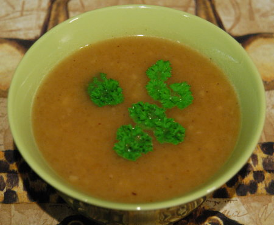

|
für 4 Personen |
|
| 400 g | Kürbis |
| 1 | grosse Zwiebel |
| 1 EL | Butter |
| 2 TL | Mehl |
| 5 dl | Gemüsebouillon |
| Petersilie | |
| Salz | |
| Pfeffer | |
| Muskat | |
| Cayenne-Pfeffer | |
| einige EL | Rahm oder Sauerrahm |
| etwas | Schlagrahm |
| Kürbiskerne | |
Den Kürbis in kleine Würfel schneiden.
Die Gemüsebouillon aufkochen.
Die Zwiebel in der Butter im Dampfkochtopf andünsten und die Kürbiswürfel beifügen. 2 Teelöffel Mehl darüber stäuben und kurz anschwitzen.
Die Gemüsebouillon einrühren und aufkochen lassen.
30 Minuten auf dem 2.Ring kochen.
Mit Petersilie, Salz, Pfeffer und Muskat nach belieben abschmecken.
Um die Suppe etwas interessanter zu machen noch etwas Cayenne-Pfeffer beigeben. Den Rahm einrühren und kräftig rühren bis die Suppe sämig ist. Eventuell etwas Schlagrahm und Kürbiskerne als Garnitur verwenden.
Fenner's Kürbisrezepte, Herbert Eigenmann, Code: KÜS
Schmeckt toll, RE + 10 Gäste Freitag 13.10.2000.
@LINKBACK_TAG@ @WAKELOCK@